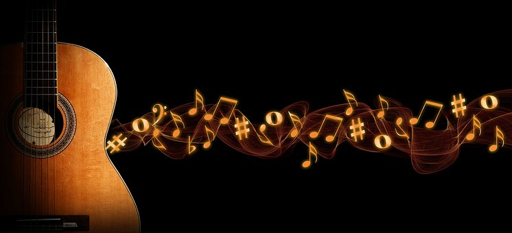

Single Picture

Picture With text
Tanpa musik, hidup adalah kesalahan.
Satu hal yang menarik tentang musik, ketika musik menghantam kita, kita tidak merasa sakit.
Musik mengekspresikan yang mulut tidak bisa katakan.
Mungkin teman akan meninggalkan kita, tetapi musik tidak.
Sebagian orang memiliki kehidupan, sebagian lagi memiliki musik.
Musik memberi jiwa pada alam semesta, memberi sayap pada akal, dan menerbangkan imajinasi.
Ketika kata-kata gagal, musik berbicara.
Musik adalah wahyu yang lebih tinggi dari segala kebijaksanaan dan filosofi.
Pelukis menciptakan karyanya diatas kanvas.Musisi menciptakan karyanya diatas keheningan.
Orang yang mendengar musik merasakan kesunyian yang mendamaikan.
Kelebihan musik adalah menyanyikan cerita sedih dengan melodi yang indah.
Bahasa universal manusia adalah musik.
Nada-nadalah yang mengisi cangkir kesunyian.
Musik adalah bahasa jiwa.
Musik memberikan kepuasan yang manusia butuhkan.
Musik dari jiwa dapat didengar oleh alam semesta.
Musik adalah kunci ajaib untuk membuka jiwa yang paling tertutup sekalipun.
Tuts piano hanya hitam dan putih namun dapat menjabarkan jutaan warna dalam pikiran kita.
Musik adalah cahaya bulan pada malam kehidupan yang murung.
Jenis musik yang didengarkan orang dapat memberitahu sesuatu tentang dirinya.
Kata membuatmu berpikir. Musik membuatmu merasa. Lagu membuatmu merasakan sebuah pemikiran.
Jika kita kehilangan kepercayaan pada musik dan cinta, maka akhirnya sudah dekat.
Musik adalah lagu tema kehidupan kita, saat baik ataupun buruk.